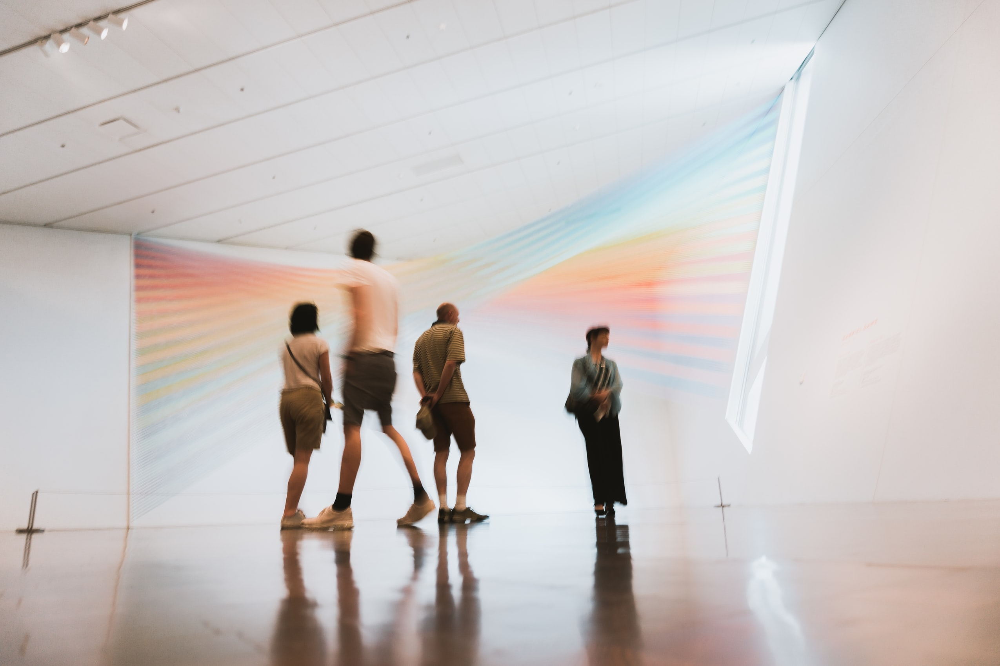

Jan 8 - 2021 - 8 min read
Author: By Rebecca Carlsson
Why we need museums now more than ever
Original article from: https://www.museumnext.com/article/why-we-need-museums-now-more-than-ever/
In today’s uncertain times, museums can act as an anchor in the storm. To those who aren’t as passionate about the power of museums as readers of this blog, it can often seem that such institutions are merely places where forgotten objects go to enjoy their final years. But despite this, there’s a strong case to be made that the museum is more relevant today than it has ever been. From addressing key social issues to transforming how we see the future, the humble museum has the power to reflect and shape our society. Here are five reasons why we need museums now more than ever.
Why we need museums now more than ever
First and foremost, museums and galleries provide an insight into the history of humankind. And while no museum can claim to provide a complete picture, the lessons we can learn from past events, wonders and tragedies are priceless.
This is especially true in times of turmoil. Today, it’s impossible to ignore the escalating tensions between nations, between political parties and between different cultural groups. Instead of finding common ground it seems that issues of class, race, gender and environmentalism are becoming ever more polarised.
To help the public re-establish this common ground and learn to build bridges rather than breed division, many believe that museums have a role to play in giving us perspective – be it through intellectual exercises or merely holding up mistakes of the past as evidence of where such behaviour will lead us once more.
Last year, the Museum of Oxford launched its Queering Spires exhibition to celebrate the ‘hidden history’ of Oxford’s LGBTQIA+ community. Speaking at the time, co-founder of the project Richard Howlett said that Oxford has a “queer history to be proud of.”